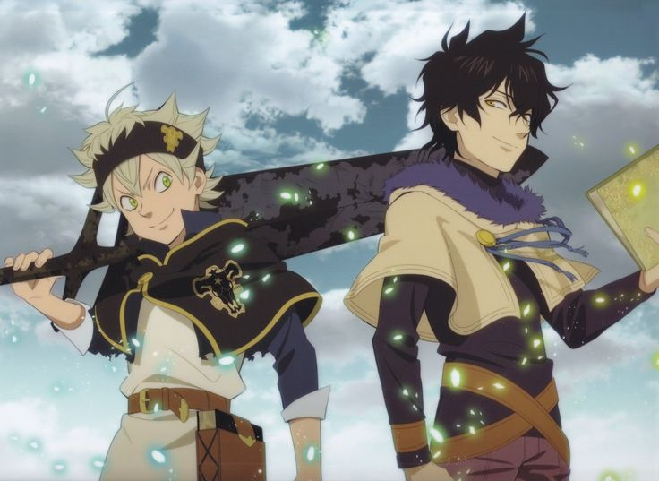
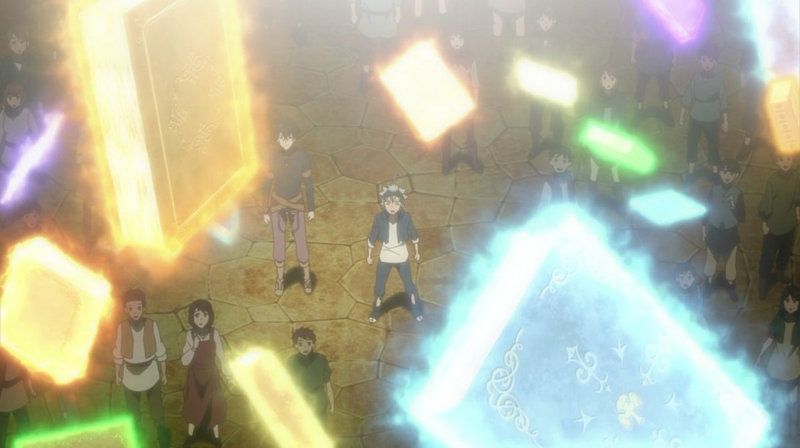
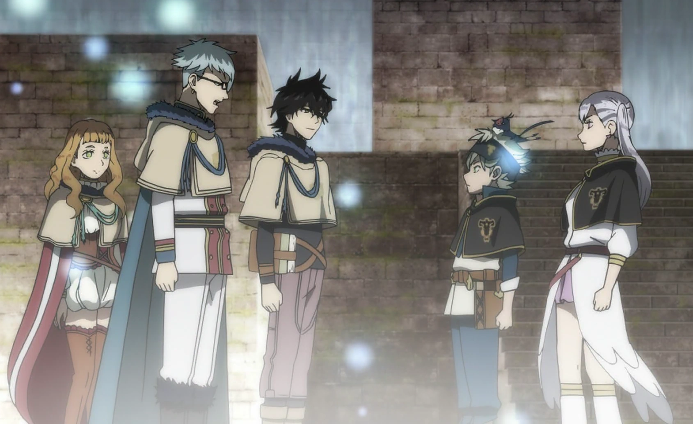
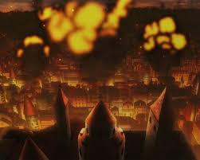
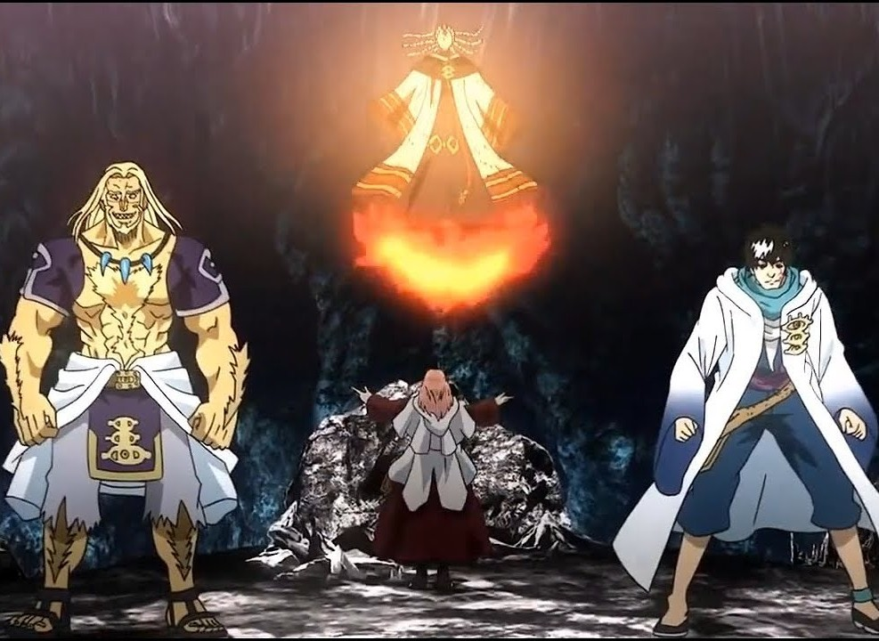
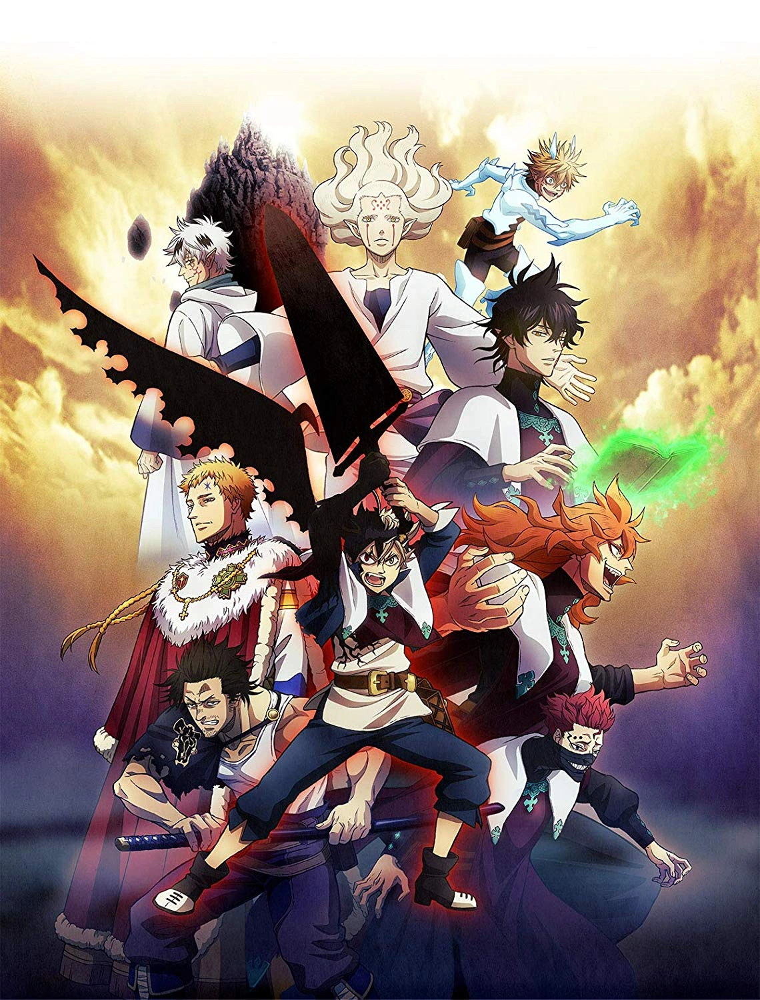
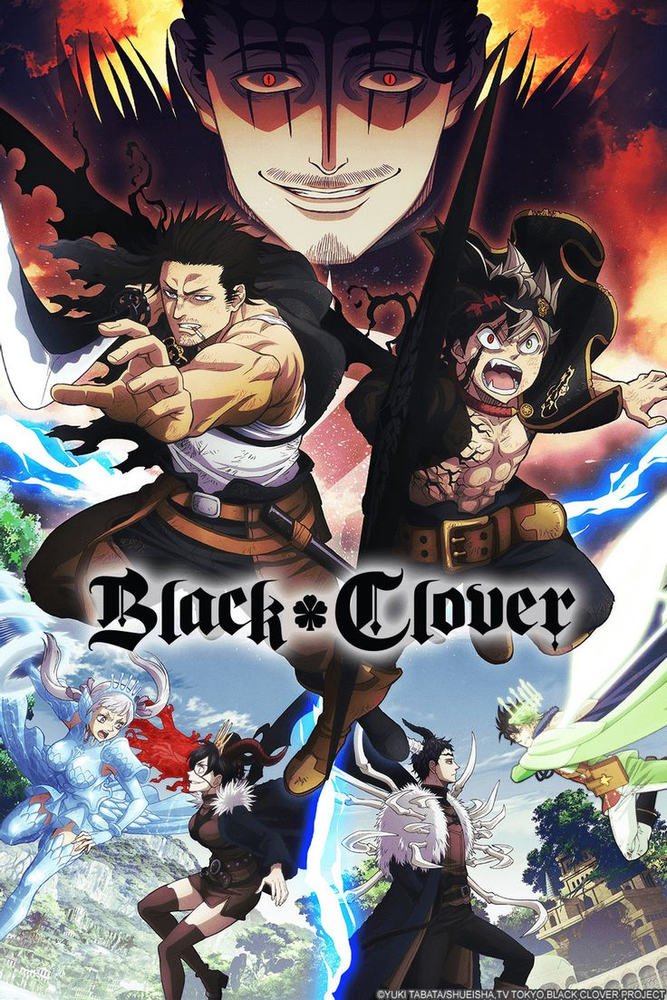
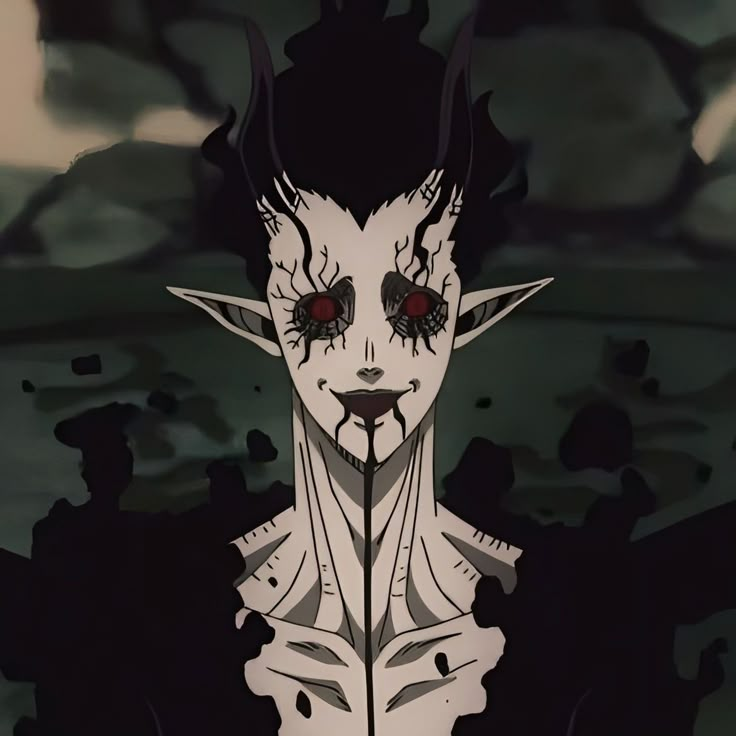
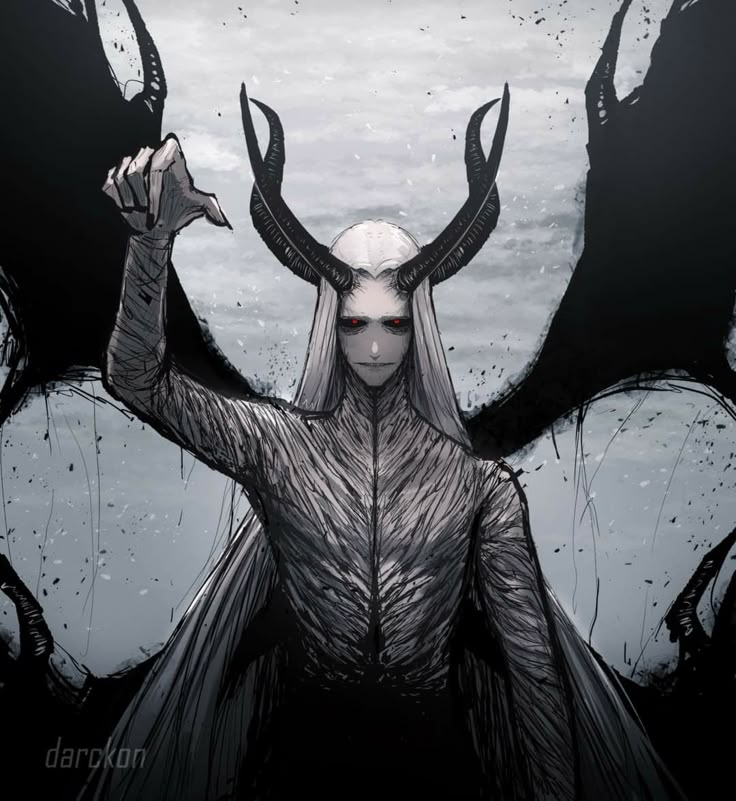
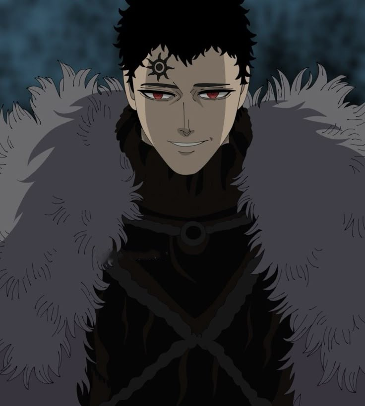

The Story of Black Clover
Follow the extraordinary journey of Asta and Yuno as they challenge fate, confront devils, and fight for the future of the Clover Kingdom.
Follow the extraordinary journey of Asta and Yuno as they challenge fate, confront devils, and fight for the future of the Clover Kingdom.
In the Clover Kingdom, magic determines one's status and power. While most people are born with magical abilities, Asta enters the world without a single drop of mana.
Alongside his rival Yuno, he dreams of becoming the Wizard King and proving that determination can surpass destiny itself.

Anime Episodes
Manga Chapters
Major Kingdoms
Story Arcs

Asta and Yuno receive their grimoires and begin their journey toward becoming the Wizard King by joining the Magic Knights.

A dangerous dungeon emerges, leading Asta and his allies into their first major battle against powerful rival mages.

The Clover Kingdom faces a sudden attack as mysterious enemies threaten the Royal Capital and its citizens.

The true ambitions of the Eye of the Midnight Sun are revealed, pushing the Magic Knights into a kingdom-wide conflict.

Ancient elves return through reincarnation, unleashing chaos and exposing the tragic history hidden within the kingdom.

The Magic Knights launch a decisive assault against the Dark Triad and the devils threatening the future of the continent.



Discover powerful characters, magical abilities, kingdoms, and unforgettable battles.
Meet the Characters